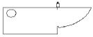
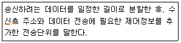

초음파비파괴검사산업기사(구) (2009-03-01 기출문제)
1과목: 초음파탐상시험원리
1. 판파(Lamb)는 일반적으로 어떤 검사에 사용되는가?
- 얇은 판
- 부피가 큰 주괴
- 외경이 큰 봉축
- 표면이 거친 단조물
(정답률: 알수없음)

2. 다음 중 재료의 음향임피던스가 갖는 주된 요소는 무엇을 결정하는데 사용되는가?
- 재료내에서의 음속
- 경계면에서의 굴절각
- 재료 내에서의 빔의 확산
- 경계면에서 통과 및 반사되는 에너지의 양
(정답률: 알수없음)
3. 초음파의 파장이 1mm이고, 진동자의 직경이 10mm인 탐촉자로 강재 내 초음파 속도가 5000m/s로 초음파탐상시 발생하는 근거리음장은 약 몇 mm인가?
- 0.25
- 2.5
- 25
- 250
(정답률: 알수없음)
4. 다음 중 표면파 입자의 진동 형태는?
- 원형
- 삼각형
- 타원형
- 사각형
(정답률: 알수없음)
5. 강에서 아크릴 계면으로 초음파가 수직으로 입사한다. 이때의 에너지 투과율은 약 얼마인가? (단, 강과 아크릴의 음향임피던스는 각각 45.6x106kg/m2s, 3.2x106kg/m2s 이다.)
- 14%
- 25%
- 75%
- 86%
(정답률: 알수없음)
6. 근거리음장 내에서 초음파탐상시험을 수행할 때 주의해야 할 사항으로 틀린 것은?
- 허용된 크기의 불연속이 CRT상에 불합격이 될 크기의 시그널이 될 수 있으므로 주의하여야 한다.
- 불합격이 될 불연속으로부터의 시그널이 허용될 크기의 시그널로 나타날 수 있으므로 주의하여야 한다.
- 불연속으로부터의 시그널이 완전히 소실될 수 있으므로 주의하여야 한다.
- 하나의 불연속이 한 개의 지시만을 나타낼 수 있으므로 결함의 정량적 평가가 가능함에 유의하여야 한다.
(정답률: 알수없음)
7. 전도체이며 얇은 튜브 형태인 시험체를 비접촉법으로 단시간에 많은 양을 검사하기에 가장 적합한 비파괴검사법은?
- 자분탐상시험법
- 방사선투과시험법
- 침투탐상시험법
- 와전류탐상시험법
(정답률: 알수없음)
8. 다음 중 방사선투과시험을 적용하기에 가장 부적당한 것은?
- 용접 개선면
- 맞대기 용접부
- 모서리 용접부
- 완전용입 각이음부
(정답률: 알수없음)
9. 다음 중 표면결함 검출을 위한 비파괴검사에 대한 설명으로 옳은 것은?
- 육안시험은 균열, 오버랩, 피트 등의 결함의 형태, 위치 및 깊이를 측정하는 것이 가능하다.
- 자분탐상시험은 세라믹 표면균열의 검사에 이용되며 표면 및 표면직하의 결함 검출이 가능하다.
- 침투탐상 시험은 전도체 재료에만 적용할 수 있으며 표면의 개구 결함에만 검출이 가능하다.
- 와전류탐상시험은 전도체 표층부를 비접촉, 고속탐상이 가능하여 봉, 관의 자동탐상에 이용되고 있다.
(정답률: 알수없음)
10. 다음 초음파 중에서 전파속도가 가장 느린 파는?
- 종파
- 횡파
- 압축파
- 표면파
(정답률: 알수없음)
11. 다른 비파괴검사법과 비교하여 초음파탐상시험의 장점으로 옳은 것은?
- 시험체의 표면거칠기에 관계없이 측정이 용이하다.
- 시험체 내부조직 상태에 관계없이 측정이 용이하다.
- 형상의 복잡함에 관계없이 결함 검출이 유리하다.
- 감도가 높아 내부 미세 결함 검출에 유리하다.
(정답률: 알수없음)
12. 다음 비파괴검사법 중 시험체의 두께측정에 이용할 수 없는 것은?
- 방사선투과시험법
- 초음파탐상시험법
- 자분탐상시험법
- 와전류탐상시험법
(정답률: 알수없음)
13. 침투탐상시험의 적용 방법에 대한 설명으로 옳은 것은?
- 침투시간을 단축하기 위해서는 버너 등으로 탐상시작전에 침투액을 가열하여야 한다.
- 습식현상법은 수세성 염색침투탐상시험에 실시하는 것이 효율성을 높일 수 있다.
- 물과 전원이 없는 장소의 대형구조물 부분검사에는 후유화성 형광침투탐상시험이 적합하다.
- 건식현상법은 수세성 도는 후유화성 형광침투액을 사용하는데 주로 이용된다.
(정답률: 알수없음)
14. 다른 비파괴검사법에 비해 결함의 종류, 형상의 판별은 우수하나 라미네이션등과 같은 결함의 검출이 어려운 비파괴검사법은?
- 자분탐상시험
- 와전류탐상시험
- 방사선투과시험
- 초음파탐상시험
(정답률: 알수없음)
15. 자분탐상시험의 결함 검출에 대한 설명으로 틀린 것은?
- 비자성체의 결함은 검출이 곤란하다.
- 교류를 사용하면 주로 강자성체의 표면결함 검출에 국한된다.
- 표면직하 결함의 탐상에는 직류 건식자분을 사용하면 검출능이 향상된다.
- 오스테나이트계 재질의 표면결함은 반드시 교류형광자분을 사용해야 한다.
(정답률: 알수없음)
16. 다음 중 누설검사(leak testing)의 원리와 가장 가까운 비파괴검사법은?
- 자분탐상시험
- 방사선투과시험
- 침투탐상시험
- 초음파탐상시험
(정답률: 알수없음)
17. 후유화성 형광침투제를 사용한 침투탐상시험법의 장점이 아닌 것은?
- 탐상감도가 상대적으로 우수하다.
- 미세한 결함 탐상에 적합하다.
- 여러차례 검사하더라도 재현성이 좋은 검사결과를 나타낸다.
- 시험체의 형상이 복잡한 경우에 적용이 용이하다.
(정답률: 알수없음)
18. 다음 중 시험체의 결정 구조 및 방향을 알 수 있는 비파괴검사법은?
- 형광투시법(fluoroscopy)
- 단층촬영법(tomo-graphy)
- X선 회절법(X-ray diffraction)
- 입체 방사선투과사진법(stereo-radiohraphy)
(정답률: 알수없음)
19. 압력용기 등의 구조물에 대한 건전성 진단에 내압시험 중 실시되는 비파괴검사법으로 적합한 것은?
- 광탄성시험법
- 스트레인측정법
- 홀로그래피법
- 음향방출시험법
(정답률: 알수없음)
20. 다음 중 시험체의 주변에 압력차를 발생시켜 검사하는 비파괴검사법은?
- 누설겁사법
- 자분탐상시험법
- 와전류탐상시험법
- 중성자투과시험법
(정답률: 알수없음)
2과목: 초음파탐상검사
21. 초음파탐상검사시 단조품을 검사할 때 고려해야 할 사항으로 옳은 것은?
- 주사방향은 입자의 흐름 방향과 무관하다.
- 탐상감도는 대비시험편법에 주로 의존한다.
- 보편적으로 경사각탐상을 사용하여 특수한 경우 수직탐상이 이용된다.
- 근거리음장을 보정하기 위하여 분할형 탐촉자를 사용하며, 탐상 주파수는 4-6MHz가 많이 사용된다.
(정답률: 알수없음)
22. 판두께 20mm인 시험체를 굴절각 60도의 탐촉자로 탐상 할 때 1스킵(skip)거리는 약 몇 mm인가?
- 34.7mm
- 40.3mm
- 69.3mm
- 80.6mm
(정답률: 알수없음)
23. 단조품의 초음파탐상검사에 적용되는 저면에코법에 대한 설명으로 옳은 것은?
- 표면 거칠기의 보정이 필요하다.
- 시험체 곡률의 보정이 필요하다.
- 저면에코가 얻어지는 저면과 탐상면이 평행한 형태에서 적용이 가능하다.
- 결함의 길이 측정이 어렵다.
(정답률: 알수없음)
24. 경사각탐촉자의 주사법 중 2탐촉자법에 해당되는 것은?
- 지그재그주사
- 좌우 주사
- 탠덤 주사
- 진자 주사
(정답률: 알수없음)
25. 다음 중 판재를 경사각탐상법으로 검사할 경우 가장 검출하기 어려운 결함은?
- 균열(Crack)
- 기공(blow hole)
- 편석(segregation)
- 라미네이션(lamination)
(정답률: 알수없음)
26. 수침법의 경우 가장 많이 쓰는 접촉 매질은?
- 물
- 오일
- 알콜
- 글리세린
(정답률: 알수없음)
27. 다음 중 탐상에 지장을 주는 방해 에코가 발생하는 경우가 아닌 것은?
- 펄스 반복율이 매우 높을 때
- 결정립이 조대한 시험체를 고감도로 검사할 때
- 굴절각이 큰 경우 빔 퍼짐이 발생할 때
- 음향임피던스가 제로(0)인 경우
(정답률: 알수없음)
28. 다음 그림은 탐촉자의 무엇을 측정하는 것인가?

- 굴절각
- 분해능
- 감도
- 거리
(정답률: 알수없음)
29. 다음 중 국제용접학회(IIW)의 권고에 따라 ISO에서 공인한 초음파탐상용 STB-A1 표준시험편으로 확인할 수 없는 것은?
- 측정범위의 조정
- 경사각 탐촉자의 굴절각 측정
- 경사각 탐촉자의 분해능 측정
- 경사각 탐촉자의 입사점 결정
(정답률: 알수없음)
30. 다음 중 가장 기본적인 펄스-에코 방식의 초음파탐상장비는?
- A-Scan 장비
- B-Scan 장비
- C-Scan 장비
- M-scan 장비
(정답률: 알수없음)
31. 두께 50mm인 강 시험체를 수직탐상한 결과 탐상기 화면에 결함에코(F)와 저면에코(B)가 동시에 나타났다. 이 경우 결함에코와 저면에코의 높이 비(F/B)가 -18dB 이었다면 저면에코의 높이가 80%가 되도록 장치의 게인을 조정한 경우 결함에코 높이는 어떻게 나타나는가?
- 약 5%
- 약 10%
- 약 20%
- 약 40%
(정답률: 알수없음)
32. 초음파 탐상장치 수신부의 구성요소가 아닌 것은?
- 증폭기
- 감쇠기
- 정류기
- 측정범위
(정답률: 알수없음)
33. 초음파탐상검사 중 작업자의 장비의 게인은 18dB올렸다면 시험장치의 증폭인자는 얼마나 변하는가?
- 증폭비가 4배 증가한다.
- 증폭비가 1/4로 줄어든다.
- 증폭비가 8배 증가한다.
- 증폭비가 1/8로 줄어든다.
(정답률: 알수없음)
34. 초음파탐상검사시 펄스폭 손잡이를 조정하여 폭을 넓히면 어떻게 되겠는가?
- 송신 출력은 올라가고 분해능은 떨어진다.
- 송신 출력은 내려가고 분해능은 올라간다.
- 송신 출력과 분해능이 모두 내려간다.
- 송신 출력과 분해능이 모두 올라간다.
(정답률: 알수없음)
35. 초음파 탐상기에 대한 설명으로 옳은 것은?
- 사용하려는 초음파의 주파수와 펄스반복주파수를 일치 시켜야 주어야 한다.
- 초음파의 주파수는 송신부에서 조절한다.
- 송신부의 펄스폭을 증가시키면 감도는 증가하나 분해능이 저하된다.
- 강재내의 음속을 미세조정하기 위하여 음속조절 손잡이를 사용한다.
(정답률: 알수없음)
36. 초음파탐상기 중 음극에서 나온 전자 빔이 관의 앞면에 있는 형광스크린에 상을 재생시킬 수 있도록 만든 전자관을 무엇이라고 하는가?
- 음극선관
- 소임관
- 펄스발생관
- 증폭관
(정답률: 알수없음)
37. 초음파탐상장치 중 전몰수침법에 사용되는 조정기(manipulator)의 기능은?
- 횡파를 발생시킨다.
- 시험체를 고정시킨다.
- 음파의 빔의 방향을 조절한다.
- 음파의 빔의 분산을 확산시킨다.
(정답률: 알수없음)
38. 초음파탐상검사에서 일반적으로 사용되고 있는 결함 크기의 정량적 평가법이 아닌 것은?
- 에코의 높이를 이용하는 방법
- 탐촉자의 이동거리에 의한 방법
- 에코의 전파시간 차를 이용하는 방법
- 실효치 전압의 크기를 이용하는 방법
(정답률: 알수없음)
39. 다음 중 다른 진동자 재질과 비교할 때 기준으로 사용되는 재질은?
- 수정(Quartz)
- 지르콘 납(Lead zirconate)
- 황산 리튬(Lithium sulfate)
- 티탄산 바륨(Barium titanate)
(정답률: 알수없음)
40. 주강품을 초음파탐상검사할 때 탐상에 어려움이 따르는 가장 큰 문제점은?
- 아주 작은 결정구조이므로
- 불균일한 결함 형상 때문에
- 탐상표면과 저면이 평행하므로
- 조대한 결정입자를 가지므로
(정답률: 알수없음)
3과목: 초음파탐상관련규격 및 컴퓨터활용
41. 보일러 및 압력용기에 대한 초음파탐상검사(ASME Sec.V, Art.4)에서 요구하는 장치의 증폭직선성에 대한 일반적인 허용범위로 옳은 것은?
- 50%의 스크린 높이에서 전 스크린 높이의 ±10%이내
- 85%의 스크린 높이에서 전 스크린 높이의 ±15%이내
- 50%의 스크린 높이에서 전 스크린 높이의 ±5%이내
- 85%의 스크린 높이에서 전 스크린 높이의 ±10%이내
(정답률: 알수없음)
42. 알루미늄 용접부의 초음파 경사각탐상시험(KS B 0897)에서 시험결과의 분류 중 1류는 흠의 길이가 몇 mm 이하인가? (단, 흠의 구분은 B종이며, 모재의 두께는 60mm이다.)
- 15mm이하
- 20mm이하
- 35mm이하
- 45mm이하
(정답률: 알수없음)
43. 강용접부의 초음파탐상 시험방법(KS B 0896)에서 경사각탐촉자의 A1 및 A2 감도에 대한 규정으로 공칭 굴절각 60도 일 때 A1, A2 감도는 각각 몇 dB이상이어야 하는가?
- A1: 40dB, A2: 40dB
- A1: 40dB, A2: 20dB
- A1: 20dB, A2: 40dB
- A1: 20dB, A2: 20dB
(정답률: 알수없음)
44. 강용접부의 초음파탐상 시험방법(KS B 0896)의 적용대상이 아닌 시험물은?
- 두께 10mm이고 탐상면의 곡률반지름이 70mm인 원둘레 이음 용접부
- 두께 15mm이고 탐상면의 곡률반지름이 40mm인 원둘레 이음 용접부
- 두께 20mm이고 탐상면의 곡률반지름이 100mm인 원둘레 이음 용접부
- 두께 25mm이고 탐상면의 곡률반지름이 150mm인 원둘레 이음 용접부
(정답률: 알수없음)
45. 강용접부의 초음파탐상 시험방법(KS B 0896)에 의한 탠덤탐상에서 III영역 이상을 평가대상으로 할때 어떤 검출레벨을 지정하는가?
- L 검출레벨
- M 검출레벨
- H 검출레벨
- (H+6dB) 검출레벨
(정답률: 알수없음)
46. 보일러 및 압력용기에 대한 초음파탐상검사(ASME Sec. V, Art.4)에서 결함의 비교 평가를 위해 교정 시험편을 사용하는데, 교정시험편에 포함되어 있는 반사체가 아닌 것은?
- 기공
- 노치
- 평저공
- 측면드릴구멍
(정답률: 알수없음)
47. 보일러 및 압력용기에 대한 표준초음파탐상검사(ASME Sec .V,Art.23 SB-548)에서 압력용기용 알루미늄합금판에 실시하는 탐상 치대 주사속도로 옳은 것은?
- 152mm/초
- 204mm/초
- 255mm/초
- 3⑤mm/초
(정답률: 알수없음)
48. 보일러 및 압력용기에 대한 표준초음파탐상검사(ASME Sec. V, Art.23 SB-548)에서 권장하는 탐촉자에 대한 설명으로 관계가 먼 것은?
- 평면 비집속형이다.
- 정격주파수에서 종파를 발신하고 수신하는 압전수정을 내장한 것이다.
- 초기 주사에 사용하는 탐촉자 내의 수정 또는 수정 집합체의 총 유효면적은 2.5cm2이하여야 한다.
- 불연속부 치수를 평가하기 위해 사용하는 원형탐촉자의 유효지름은 19mm를 초과하지 않아야 한다.
(정답률: 알수없음)
49. 금속재료의 초음파탐상시험방법(KS B 0817)에서 시험결과의 기록 및 보고시 흠집정보의 기록에 필요한 내용에 해당되지 않는 것은?
- 최대에코의 높이
- 감도 보정량
- 흠집의 지시길이
- 흠집의 평가결과
(정답률: 알수없음)
50. 강용접부의 초음파탐상 시험방법(KS B 0896)에서 곡률을 가진 시험체를 탐상하기 위하여 RB-A8로 굴절각을 측정하려 한다. RB-A8의 두께가 tmm일 때, 0.5skip 구간에서 탐촉자 앞면에서 RB-A1의 끝면까지의 거리를 g, 0.5skip~1skip 구간에서 RB-A8 의 끝면까지의 거리를 H 라 하면 탐상굴절각을 구하는 방식은?
- 굴절각= tan-1((h-g)/2t)
- 굴절각= tan-1((h-g)/t)
- 굴절각=cos-1(9h-g)/2t)
- 굴절각= cos-1((h-g)/t)
(정답률: 알수없음)
51. 보일러 및 압력용기에 대한 초음파탐상검사(ASME Sec. V, Art.4)의 거리진폭기법에서 주사감도 수준은 대비 수준 이득 설정보다 최소 몇 dB 높게 설정하여야 하는가?
- 6dB
- 8dB
- 10dB
- 12dB
(정답률: 알수없음)
52. 금속재료의 초음파탐상시험방법(KS B 0817)에 의한 탐상장치의 특별 점검을 해야 할 경우가 아닌것은?
- 성능에 관계되는 수리를 한 경우
- 정해진 성능이 유지되고 있는지 확인할 경우
- 특별히 점검할 필요가 있다고 판단되는 경우
- 특수한 환경에서 사용하여 이상이 있다고 생각되는 경우
(정답률: 알수없음)
53. 보일러 및 압력용기에 대한 초음파탐상검사(ASME Sec.V,Art4)에서 교정시험편을 사용할 때 동일한 곡률을 가진 시험편이 아닌 곡면시험편을 사용하는 경우로 옳은 것은?
- 검사체의 직경이 508mm(20인치)를 초과할 때
- 검사체의 직경이 508mm(20인치) 이하일 때
- 검사체의 직경이 762mm(30인치)를 초과할 때
- 검사체의 직경이 762(30인치) 이하일 때
(정답률: 알수없음)
54. 보일러 및 압력용기에 대한 표준초음파탐상검사(ASME Sec.V,Art.23 A-435)에서 주사 방법에 대한 설명으로 옳은 것은?
- 공칭 간격이 9인치(225mm)인 세로 격자선을 따라 실시
- 공칭 간격이 6인치(152mm)인 가로 격자선을 따라 실시
- 공칭 간격이 4인치(101mm)인 세로 격자선을 따라 실시
- 공칭 간격이 2인치(50mm)인 가로 격자선을 따라 실시
(정답률: 알수없음)
55. 강용접부의 초음파탐상 시험방법(KS B 0896)에서 모재 두께가 15mm인 맞대기 용접부를 탐상한 결과 M 검출레벨에서 흠의 최대에코 높이가 제 II영역에 해당하고 흠의 길이는 20mm인 것이 1개 검출되었다. 이 용접부의 시험 결과 분류는?
- 1류
- 2류
- 3류
- 4류
(정답률: 알수없음)
56. 다음 중 인터넷을 통해 멀티미디어 정보를 제공하는 온라인 잡지를 일컫는 용어로 옳은 것은?
- 웹진(Webzine)
- 옐로우페이지(Yellowpage)
- 네티즌(Netizen)
- 화이트페이지(Whitepage)
(정답률: 알수없음)
57. 다음 중 컴퓨터 범죄 방지 대책으로 거리가 먼 것은?
- 해킹 방지를 위해 전문적인 통신보안인력을 양성 한다.
- 패스워드를 수시로 변경하여 패스워드 노출과 남용을 사전에 방지한다.
- 사용화면 인터페이스 개선을 위해 웹디자이너를 양성한다.
- 웹 사용자들의 윤리의식 정립을 위해 정기적인 윤리교육을 수행한다.
(정답률: 알수없음)
58. 다음 설명에 해당하는 것은?

- 도메인(domain name)
- 패킷(packet)
- NIC(Network Information Center)
- 텔넷(Telnet)
(정답률: 알수없음)
59. 다음 인터넷의 도메인 네임(Domain name)의 분류 중 정부기관 표기로 옳은 것은?
- com
- net
- org
- gov
(정답률: 알수없음)
60. 컴퓨터 연상 장치 중 연상 후 결과 값을 일시적으로 기억하는 장치는?
- accumulator
- instruction register
- data register
- status register
(정답률: 알수없음)
4과목: 금속재료 및 용접일반
61. 강재 표면 흠 또는 개재물, 탈탄층 등을 제거하기 위하여 평평한 타원형 모양으로 얇고 넓게 깍아내는 가공법은?
- 가우징
- 용착
- 스카핑
- 평행절단
(정답률: 알수없음)
62. 이면 담금질법이라고도 하며 주로 맞대기 용접이음이나 필릿 용접이음부의 각 변형(angular distortion)을 교정하기 위하여 이용하는 변형제거 방법은?
- 점가열법
- 선상가열법
- 삼각가열법
- 격자가열법
(정답률: 알수없음)
63. 가스용접에서 산소-아세틸렌 가스의 완전 연소식에서의 반응 생성물의 화학식은?
- CO+CO2
- 2CO2+H2O
- CO+H2O
- CO+CO2+H2O
(정답률: 알수없음)
64. 다음 그림과 같은 용접이음에서 연강판 두께가 20mm, 용접길이가 150mm, 부재의 높이 L=60mm, 최대하중이 583.3kgf일 때 용접부에 발생하는 굽힘 응력(kgf/cm2)은 약 얼마인가?
- 550
- 450
- 350
- 250
(정답률: 알수없음)
65. 2개의 금속을 밀착시키면 자유 전자가 공동화하여 결정 격자점의 금속 이온과의 상호 작용으로 금속 원자를 결합시키는 방법으로 상온에서 단순히 가압만으로 금속 상호간의 확산을 일으켜 접합하는 방식은?
- 업셋 압접
- 마찰 압접
- 열간 압접
- 냉간 압접
(정답률: 알수없음)
66. 교류 아크 용접기의 종류 중 일반적으로 용접 전류의 원격 제어가 가능한 것은?
- 탬 전환형 용접기
- 가동 철심형 용접기
- 가동 코일형 용접기
- 가포화 리액터형 용접기
(정답률: 알수없음)
67. 점 용접의 3대 요소가 아닌 것은?
- 도전율
- 전류의 세기
- 가압력
- 통전시간
(정답률: 알수없음)
68. 불활성 가스 금속 아크용접의 특징이 아닌 것은?
- 3mm이상 두꺼운 판의 용접에 능률적이다.
- 정전압 특성 또는 상승 특성의 직류용접기가 사용된다.
- 아크 자기 제어 특성이 있다.
- 직류 역극성 이용시 알루미늄, 마그네슘 등의 용접이 불가능하다.
(정답률: 알수없음)
69. 용접부 홈(Grove) 가공방법 중 두꺼운 재료의 용접에 가장 적합한 홈은?
- K형
- V 형
- I 형
- X형
(정답률: 알수없음)
70. 용접홈 설계에 대한 설명으로 틀린 것은?
- 흠 각도를 작게 할 경우 루트간격은 넓게 한다.
- 루트간격이 좁을 때는 루트면을 작게 한다.
- 루트간격이 좁을 때는 베벨 각도를 크게 한다.
- 중판이상에서는 홈의 단면적을 가능한 한 크게 한다.
(정답률: 알수없음)
71. 금속표면에 초경합금, 스텔라이트 등의 특수합금을 용착시키는 방법의 경화법은?
- Chromizing
- Hard facing
- Calorizing
- Sheradizing
(정답률: 알수없음)
72. 섬유강화 합금의 제조방법 중 금속의 확산접합을 이용한 것이 아닌 것은?
- 분말야금법
- 열간압연법
- 용침법
- 박야금법
(정답률: 알수없음)
73. 특정의 평면을 경계로 하여 처음의 결정과 경면적 대칭의 관계에 있는 원자배열을 갖는 결정을 무엇이라고 하는가?
- 슬립
- 전위
- 쌍정
- 단조
(정답률: 알수없음)
74. 동(Cu) 계 함유베어링(오일리스 베어링)의 주요 조성으로 옳은 것은?
- Cu-Ti-Ni
- Cu-Ta-Al
- Cu-S-Cr
- Cu-Sn-C
(정답률: 알수없음)
75. 조성이 Al-Cu-Mg-Mn이며, 고강도 Al 합금에 해당되는 것은?
- Lautal
- Silumin
- Hydronalium
- Duralumin
(정답률: 알수없음)
76. 피아노 선재를 Tempering하여 얻는 조직은?
- 마텐자이트
- 잔류오스테나이트
- 트루스타이트
- 소르바이트
(정답률: 알수없음)
77. 압력이 일정한 경우 A-B합금에서 2상이 공존하는 영역에서의 자유도는 얼마인가?
- 0
- 1
- 2
- 3
(정답률: 알수없음)
78. 다음 중 탄화물 형성능이 가장 큰 금속은?
- Ta
- Nb
- Cr
- Mo
(정답률: 알수없음)
79. 동소변태에 대한 설명 중 틀린 것은?
- 고체내에서 원자배열의 변화에 의해서 생긴다.
- 결정격자의 형상이 변하기 때문에 나타난다.
- 동소변태 A4의 온도는 약 1400도에서 일어난다.
- 점진적이고 연속적인 변화에 의해 생긴다.
(정답률: 알수없음)
80. 다음 중 불변강의 종류가 아닌 것은?
- 인바
- 코비탈륨
- 엘린바
- 플래티나이트
(정답률: 알수없음)